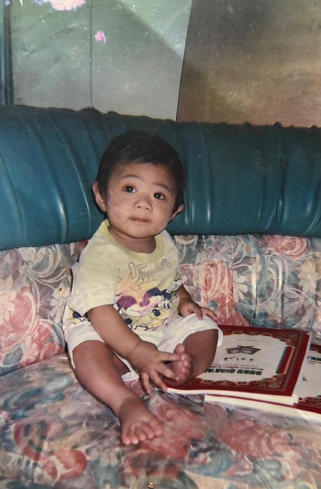
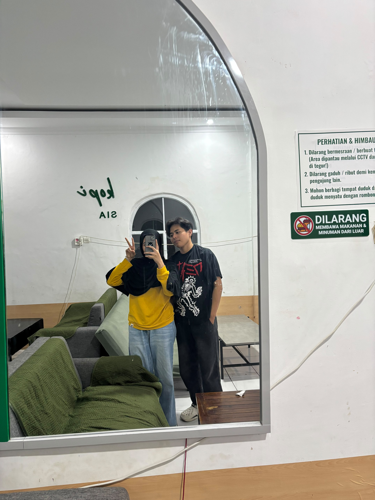
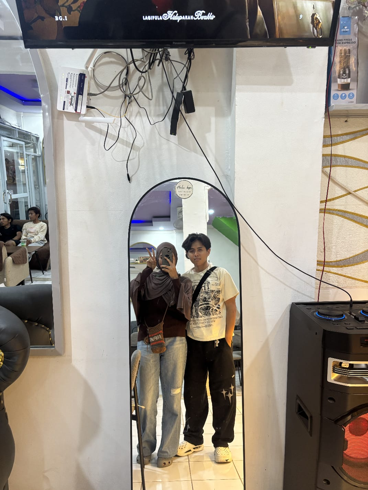

My First & Favorite Chapter
Happy Birthday, Wahid Sayangg
Dari versi kecilmu sampai hari ini kita berdiri berdampingan, aku selalu bersyukur semesta mempertemukan aku denganmu.
Tentang Kamu & Kita
Tiga potongan cerita yang selalu bikin senyumku muncul sendiri.

Versi kecilmu yang gemes

Cermin saksi cerita kita

First experience terindah
Kenapa Kamu Begitu Berarti
Ketuk tiap kotak kecil di bawah ini ya, Sayang.
01. First Experience Paling Manis
Ketuk
Bersamamu adalah pertama kalinya aku merasakan hangatnya diperhatikan tanpa diminta, dimengerti bahkan saat aku lagi manja dan susah ditebak.
02. Tempat Pulang Paling Tenang
Ketuk
Sesibuk atau secapek apa pun hariku, begitu lihat foto kita atau dengar suaramu, rasanya semua beban langsung ikut reda.
03. Harapan Panjang Setelah Hari Ini
Ketuk
Aku nggak cuma mau merayakan ulang tahunmu hari ini, tapi juga puluhan ulang tahun berikutnya di sampingmu.
Surat Kecil Untuk Wahid Sayangg
“Kalau disuruh mengulang waktu, aku tetap akan memilih bertemu kamu—pengalaman pertama yang nggak pernah ingin aku akhiri.”
Make a Wish, Sayang
Pejamkan mata sebentar, titipkan doa terbaikmu, lalu tiup lilinnya.